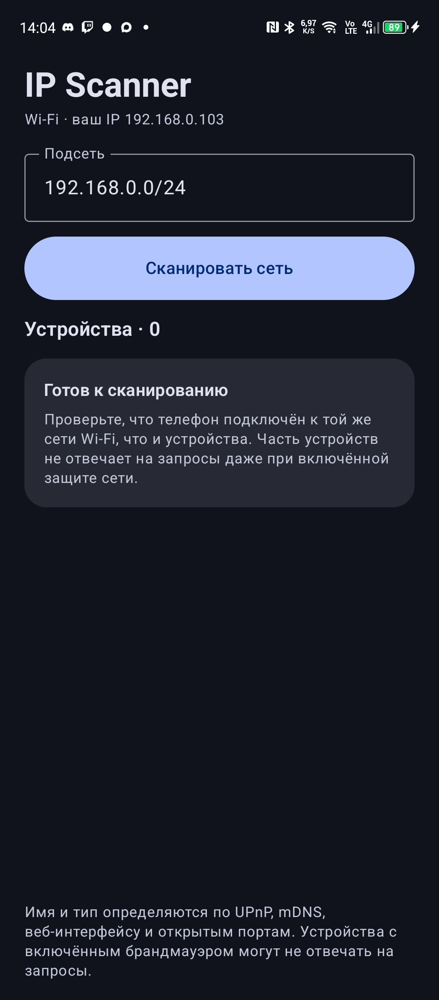
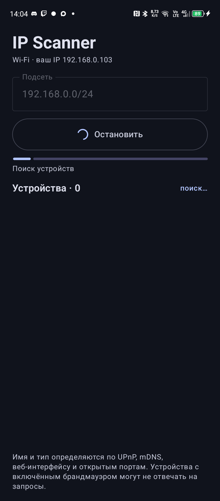
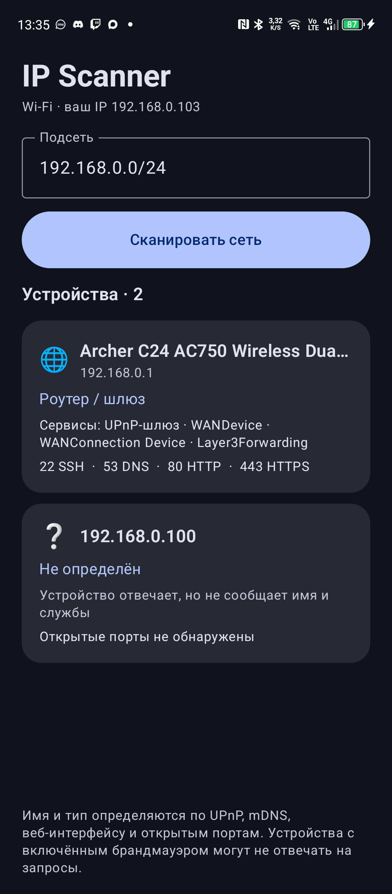

Сканер локальной сети, который показывает не просто IP-адреса, а устройства: имя, тип, службы и открытые TCP-порты.
Известен только собственный IP. Какие ещё устройства в сети, как они называются и что у них открыто — неизвестно.
В веб-интерфейсе — только DHCP-клиенты. Ни открытых портов, ни служб, ни типа устройства.
Fing и Network Analyzer бесплатны частично, требуют аккаунт и отправляют данные в облако.
С Android 10 система запрещает приложениям читать ARP-таблицу — MAC чужих устройств недоступен без root.
Нативное Android-приложение, которое за несколько секунд строит понятную карту сети: кто в ней есть и чем эти устройства занимаются.
LinkProperties даёт IPv4-адрес, длину маски и шлюз — без устаревшего Wi-Fi API.NsdManager и опрос всех адресов подсети: TCP (успех или отказ RST = хост жив), при неудаче — ICMP.Wi-Fi, Ethernet и точка доступа. CIDR можно ввести вручную.
TCP-пробы, ICMP, UPnP/SSDP и mDNS — четыре независимых источника.
UPnP friendlyName, mDNS, обратный DNS или заголовок веб-интерфейса.
Роутер, компьютер, телефон, принтер, камера, ТВ, NAS, умное устройство.
47 популярных портов с человекочитаемыми названиями служб.
Прогресс, отмена, сохранение состояния при повороте экрана.



Самый известный сканер. Много функций и MAC-адреса, но приложение закрытое, с рекламой и подпиской Fing Pro.
Удобная диагностика Wi-Fi. Реклама, часть возможностей только в платной версии, исходники закрыты.
Мощные инструменты для ПК. nmap требует терминала, часть режимов — root; Angry IP Scanner вообще не для Android.
Бесплатно и всегда под рукой, но показывает только DHCP-клиентов: без портов, служб и типа устройства.
| IP Scanner | Fing | Network Analyzer | nmap | |
|---|---|---|---|---|
| Открытый исходный код | да | нет | нет | да |
| Без рекламы и аккаунта | да | нет | нет | да |
| Приложение для Android | да | да | да | нет |
| Порты и службы | да | Pro | Pro | да |
| MAC-адреса | нет (ОС) | да | частично | root |
| Размер | 1,4 МБ | десятки МБ | десятки МБ | десятки МБ |
Возможности конкурентов — по публичным описаниям приложений; часть из них доступна только в платных версиях.
Это ограничения платформы и выбранного метода, а не ошибки приложения — они зафиксированы в README и в самом интерфейсе.
Исходный код, тесты и подписанная релизная сборка — в репозитории.